tinytex::is_tinytex()[1] TRUEtinytex::is_tinytex()[1] TRUE
Attaching package: 'dplyr'The following objects are masked from 'package:stats':
filter, lagThe following objects are masked from 'package:base':
intersect, setdiff, setequal, union
Attaching package: 'lubridate'The following objects are masked from 'package:base':
date, intersect, setdiff, union# Load datasets
df1 <- read.csv("2019-21_dailydata.csv")
df2 <- read.csv("2022_24_dailydata.csv")# Merge the data
workdf <- rbind(df1, df2)#Explore the df
head(workdf) year month day date citizenship direction_code customs_port_code
1 2019 1 1 1/1/2019 non-NZ A AKL
2 2019 1 1 1/1/2019 non-NZ A AKL
3 2019 1 1 1/1/2019 non-NZ A AKL
4 2019 1 1 1/1/2019 non-NZ A AKL
5 2019 1 1 1/1/2019 non-NZ A AKL
6 2019 1 1 1/1/2019 non-NZ A AKL
travel_mode closest_overseas_port_code closest_overseas_port_name
1 A EZE Buenos Aires
2 A EZE Buenos Aires
3 A EZE Buenos Aires
4 A EZE Buenos Aires
5 A EZE Buenos Aires
6 A EZE Buenos Aires
closest_overseas_port_country sex_code age_at_travel_range total_movements
1 Argentina F 01 - 17 years 12
2 Argentina F 18 - 39 years 36
3 Argentina F 40 - 69 years 24
4 Argentina M 01 - 17 years 6
5 Argentina M 18 - 39 years 18
6 Argentina M 40 - 69 years 21str(workdf)'data.frame': 1657122 obs. of 14 variables:
$ year : int 2019 2019 2019 2019 2019 2019 2019 2019 2019 2019 ...
$ month : int 1 1 1 1 1 1 1 1 1 1 ...
$ day : int 1 1 1 1 1 1 1 1 1 1 ...
$ date : chr "1/1/2019" "1/1/2019" "1/1/2019" "1/1/2019" ...
$ citizenship : chr "non-NZ" "non-NZ" "non-NZ" "non-NZ" ...
$ direction_code : chr "A" "A" "A" "A" ...
$ customs_port_code : chr "AKL" "AKL" "AKL" "AKL" ...
$ travel_mode : chr "A" "A" "A" "A" ...
$ closest_overseas_port_code : chr "EZE" "EZE" "EZE" "EZE" ...
$ closest_overseas_port_name : chr "Buenos Aires" "Buenos Aires" "Buenos Aires" "Buenos Aires" ...
$ closest_overseas_port_country: chr "Argentina" "Argentina" "Argentina" "Argentina" ...
$ sex_code : chr "F" "F" "F" "M" ...
$ age_at_travel_range : chr "01 - 17 years" "18 - 39 years" "40 - 69 years" "01 - 17 years" ...
$ total_movements : int 12 36 24 6 18 21 9 18 21 3 ...modedf <- workdf$travel_mode
head(modedf, 40) [1] "A" "A" "A" "A" "A" "A" "A" "A" "A" "A" "A" "A" "A" "A" "A" "A" "A" "A" "A"
[20] "A" "A" "A" "A" "A" "A" "A" "A" "A" "A" "A" "A" "A" "A" "A" "A" "A" "A" "A"
[39] "A" "A"# Extract distinct airport names (customs_port_code) from the raw data (workdf)
distinct_travel_mode <- workdf %>%
select(travel_mode) %>%
distinct()
# Print the distinct airport codes
print(distinct_travel_mode) travel_mode
1 A
2 C
3 Otail(workdf) year month day date citizenship direction_code customs_port_code
1657117 2024 9 17 9/17/2024 non-NZ D AKL
1657118 2024 9 17 9/17/2024 non-NZ D AKL
1657119 2024 9 17 9/17/2024 non-NZ D AKL
1657120 2024 9 17 9/17/2024 non-NZ D AKL
1657121 2024 9 17 9/17/2024 non-NZ D AKL
1657122 2024 9 17 9/17/2024 non-NZ D AKL
travel_mode closest_overseas_port_code closest_overseas_port_name
1657117 A LAX Los Angeles
1657118 A LAX Los Angeles
1657119 A SFO San Francisco
1657120 A SFO San Francisco
1657121 A VLI Port Vila
1657122 A VLI Port Vila
closest_overseas_port_country sex_code age_at_travel_range
1657117 United States F age unknown
1657118 United States M age unknown
1657119 United States F age unknown
1657120 United States M age unknown
1657121 Vanuatu F age unknown
1657122 Vanuatu M age unknown
total_movements
1657117 51
1657118 42
1657119 51
1657120 54
1657121 30
1657122 87# Create a 'month-year' column
workdf$Date <- as.Date(paste(workdf$year, workdf$month, "01", sep = "-"),
format = "%Y-%m-%d")library(dplyr)
# Summarize the total monthly movements
monthly_data <- workdf %>%
group_by(year, month) %>%
summarise(Total_Movements = sum(total_movements, na.rm = TRUE),
.groups = "drop")library(ggplot2)
# Plot total monthly movements over the years
ggplot(monthly_data, aes(x = as.Date(paste(year, month, "01", sep = "-")),
y = Total_Movements)) +
geom_line() +
scale_x_date(date_labels = "%Y-%m", date_breaks = "1 year") +
labs(title = "Monthly Movements Over the Years",
x = "Date",
y = "Total Movements") +
theme_minimal()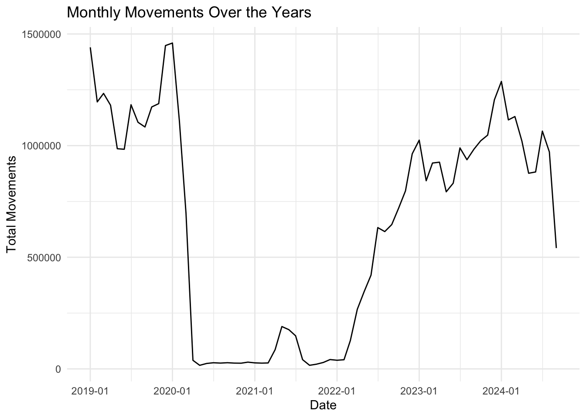
head(workdf$date)[1] "1/1/2019" "1/1/2019" "1/1/2019" "1/1/2019" "1/1/2019" "1/1/2019"# 1st Data Clean
# Load necessary libraries
library(dplyr)
library(lubridate)
library(ggplot2)
# Convert date column to Date format and add year-month column
workdf <- workdf %>%
mutate(date = mdy(date), year_month = floor_date(date, "month"))
# Remove unnecessary columns and aggregate data monthly to reduce size
workdf_monthly <- workdf %>%
select(year_month, age_at_travel_range, total_movements) %>%
group_by(year_month, age_at_travel_range) %>%
summarise(total_movements = sum(total_movements, na.rm = TRUE), .groups = "drop")
# Add period labels to distinguish before, during, and after COVID-19
workdf_monthly <- workdf_monthly %>%
mutate(period = case_when(
year_month < as.Date("2020-03-01") ~ "Before COVID-19",
year_month >= as.Date("2020-03-01") & year_month <= as.Date("2021-12-31") ~ "During COVID-19",
year_month > as.Date("2021-12-31") ~ "After COVID-19"
))
# Factor the period column for ordered visualization
workdf_monthly$period <- factor(workdf_monthly$period, levels = c("Before COVID-19", "During COVID-19", "After COVID-19"))# Aggregate data by age group and period for visualization
age_summary <- workdf_monthly %>%
group_by(age_at_travel_range, period) %>%
summarise(total_movements = sum(total_movements, na.rm = TRUE), .groups = "drop")
# Bar plot comparing age groups across periods
ggplot(age_summary, aes(x = age_at_travel_range, y = total_movements, fill = period)) +
geom_bar(stat = "identity", position = position_dodge(width = 0.5)) +
labs(title = "Impact of Age Groups on Tourism Before, During, and After COVID-19",
x = "Age Group", y = "Total Movements") +
theme_minimal() +
scale_fill_manual(values = c("Before COVID-19" = "#00AFBB", "During COVID-19" = "#E7B800", "After COVID-19" = "#FC4E07")) +
theme(axis.text.x = element_text(angle = 45, hjust = 1))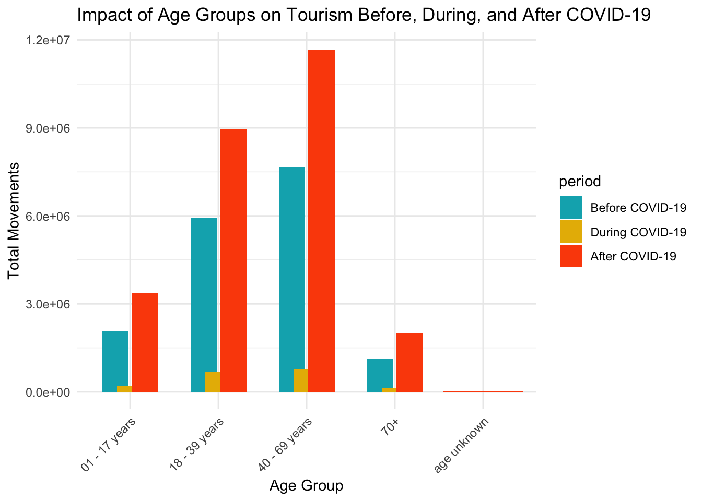
# Line chart to show trends over time
ggplot(age_summary, aes(x = period, y = total_movements, group = age_at_travel_range, color = age_at_travel_range)) +
geom_line(size = 0.5) +
geom_point(size = 2) +
labs(title = "Trends in Tourism by Age Group Across COVID-19 Periods",
x = "Time Period", y = "Total Movements") +
theme_minimal() +
scale_x_discrete(limits = c("Before COVID-19", "During COVID-19", "After COVID-19")) +
theme(legend.title = element_blank(), axis.text.x = element_text(angle = 45, hjust = 1))Warning: Using `size` aesthetic for lines was deprecated in ggplot2 3.4.0.
ℹ Please use `linewidth` instead.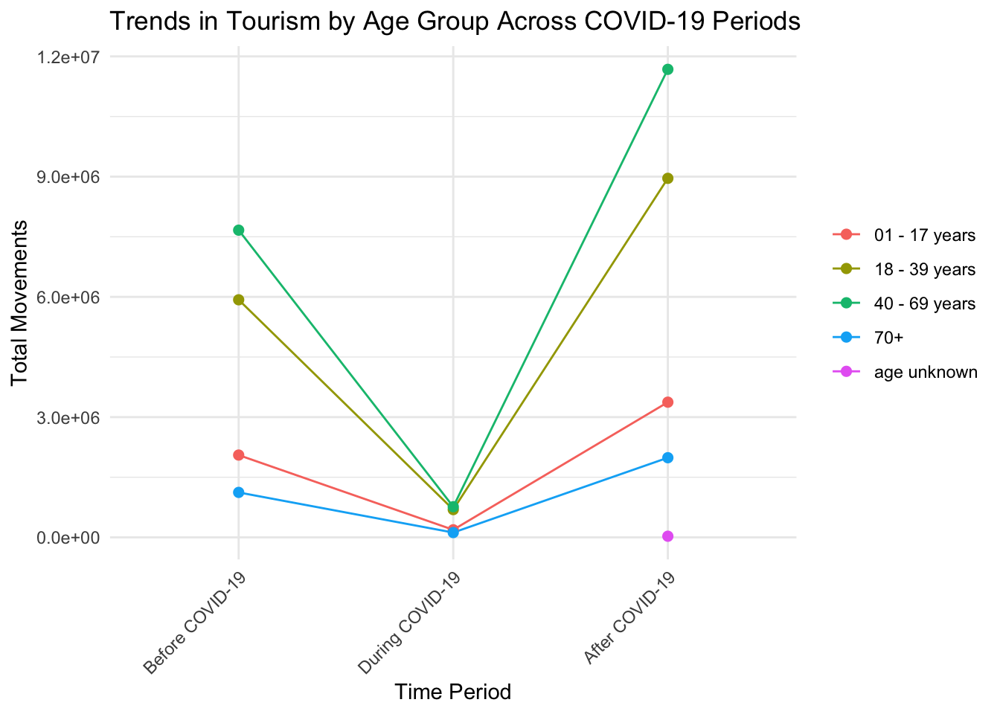
# Perform ANOVA to compare periods for each age group
anova_results <- function(age_group) {
age_data <- age_summary %>% filter(age_at_travel_range == age_group)
anova_result <- aov(total_movements ~ period, data = age_data)
return(summary(anova_result))
}
# Example: ANOVA for "18 - 39 years"
anova_18_39 <- anova_results("18 - 39 years")
print(anova_18_39) Df Sum Sq Mean Sq
period 2 3.496e+13 1.748e+13# If assumptions are not met, perform Kruskal-Wallis Test
kruskal_results <- function(age_group) {
age_data <- age_summary %>% filter(age_at_travel_range == age_group)
kruskal_test_result <- kruskal.test(total_movements ~ period, data = age_data)
return(kruskal_test_result)
}
# Example: Kruskal-Wallis Test for "18 - 39 years"
kruskal_18_39 <- kruskal_results("18 - 39 years")
print(kruskal_18_39)
Kruskal-Wallis rank sum test
data: total_movements by period
Kruskal-Wallis chi-squared = 2, df = 2, p-value = 0.3679# Prepare data for clustering (use period and age group information)
cluster_data <- workdf_monthly %>%
select(total_movements, period, age_at_travel_range) %>%
mutate(period = as.numeric(as.factor(period)),
age_at_travel_range = as.numeric(as.factor(age_at_travel_range))) %>%
scale()
# Determine the optimal number of clusters using the Elbow Method
library(cluster)
library(factoextra)Welcome! Want to learn more? See two factoextra-related books at https://goo.gl/ve3WBafviz_nbclust(cluster_data, kmeans, method = "wss") +
labs(title = "Elbow Method for Optimal Clusters")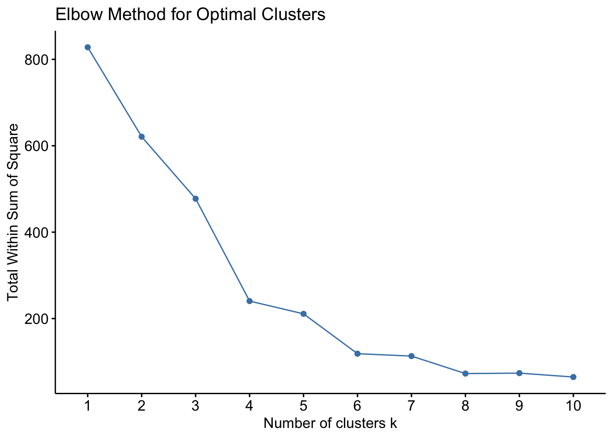
# Fit K-Means clustering
set.seed(123)
kmeans_result <- kmeans(cluster_data, centers = 3, nstart = 25)
# Assign cluster labels to original data for interpretation
workdf_monthly$cluster <- as.factor(kmeans_result$cluster)
# Summarize clusters to interpret
cluster_summary <- workdf_monthly %>%
group_by(cluster) %>%
summarise(
mean_movements = mean(total_movements, na.rm = TRUE),
count = n()
)
print(cluster_summary)# A tibble: 3 × 3
cluster mean_movements count
<fct> <dbl> <int>
1 1 44001. 97
2 2 414203. 79
3 3 74955. 101# Load necessary library
library(dplyr)
# Prepare data for regression analysis
workdf_monthly <- workdf_monthly %>%
mutate(
period = factor(period, levels = c("Before COVID-19", "During COVID-19", "After COVID-19")),
age_at_travel_range = factor(age_at_travel_range)
)
# Fit a linear regression model
regression_model <- lm(total_movements ~ period + age_at_travel_range, data = workdf_monthly)
# Summary of the model
summary(regression_model)
Call:
lm(formula = total_movements ~ period + age_at_travel_range,
data = workdf_monthly)
Residuals:
Min 1Q Median 3Q Max
-312675 -72773 0 77195 213618
Coefficients:
Estimate Std. Error t value Pr(>|t|)
(Intercept) 219487 16996 12.914 < 2e-16 ***
periodDuring COVID-19 -279336 17142 -16.296 < 2e-16 ***
periodAfter COVID-19 -102490 15992 -6.409 6.51e-10 ***
age_at_travel_range18 - 39 years 144367 17072 8.456 1.76e-15 ***
age_at_travel_range40 - 69 years 209985 17072 12.300 < 2e-16 ***
age_at_travel_range70+ -34590 17072 -2.026 0.0437 *
age_at_travel_rangeage unknown -88074 101199 -0.870 0.3849
---
Signif. codes: 0 '***' 0.001 '**' 0.01 '*' 0.05 '.' 0.1 ' ' 1
Residual standard error: 100300 on 270 degrees of freedom
Multiple R-squared: 0.6814, Adjusted R-squared: 0.6744
F-statistic: 96.26 on 6 and 270 DF, p-value: < 2.2e-16# Plot model diagnostics
par(mfrow = c(2, 2))
plot(regression_model)Warning: not plotting observations with leverage one:
277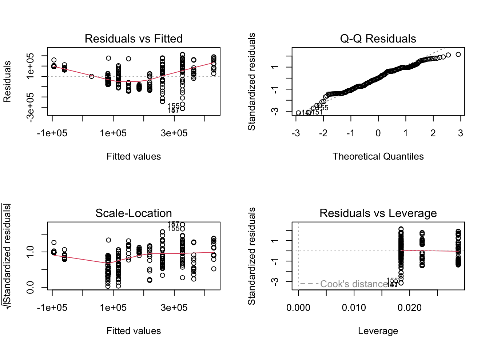
# Add predicted values to the dataset
pred_data <- workdf_monthly %>%
mutate(predicted_values = predict(regression_model, newdata = workdf_monthly))
# Plot predicted vs actual values
ggplot(pred_data, aes(x = predicted_values, y = total_movements)) +
geom_point(alpha = 0.5) +
geom_smooth(method = "lm", se = FALSE, color = "blue") +
labs(title = "Predicted vs. Actual Visitor Movements",
x = "Predicted Values", y = "Actual Values") +
theme_minimal()`geom_smooth()` using formula = 'y ~ x'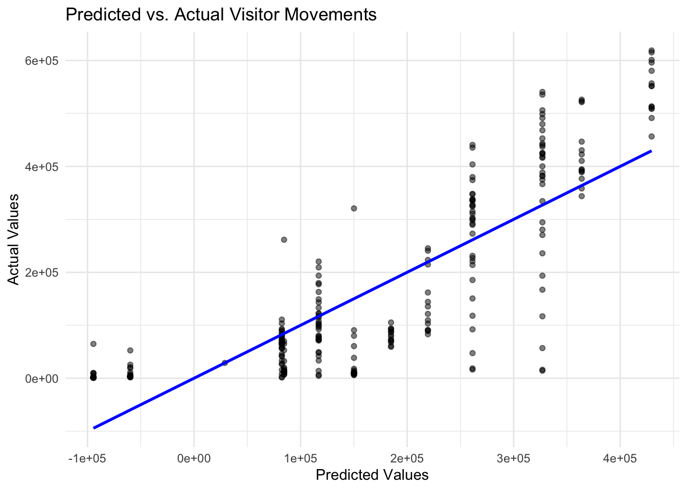
# Residual plot
ggplot(pred_data, aes(x = predicted_values, y = residuals(regression_model))) +
geom_point(alpha = 0.5) +
geom_hline(yintercept = 0, color = "red", linetype = "dashed") +
labs(title = "Residuals vs. Fitted Values",
x = "Fitted Values", y = "Residuals") +
theme_minimal()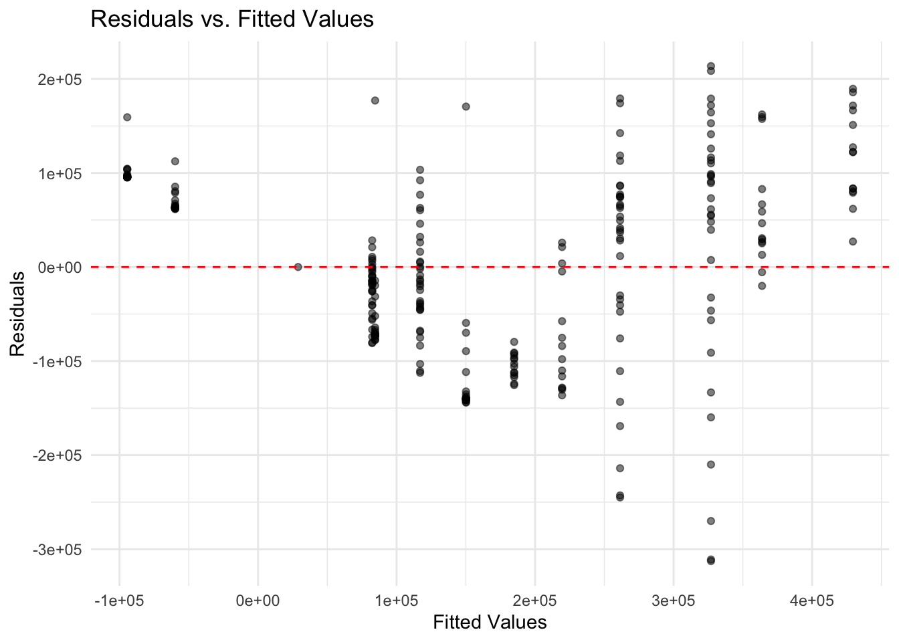
# Convert sex_code to a factor
workdf$sex_code <- as.factor(workdf$sex_code)
# Convert date to Date type
workdf$date <- as.Date(workdf$date, format = "%m/%d/%Y")
# Summarize total movements by gender
gender_distribution <- workdf %>%
group_by(sex_code) %>%
summarise(Total_Movements = sum(total_movements))
print(gender_distribution)# A tibble: 3 × 2
sex_code Total_Movements
<fct> <int>
1 F 22499760
2 M 22060638
3 unavailable 204#Bar plot for gender distribution
ggplot(gender_distribution, aes(x = sex_code, y = Total_Movements, fill = sex_code)) +
geom_bar(stat = "identity", color = "black") +
labs(x = "Gender", y = "Total Movements", title = "Gender Distribution of Travelers to New Zealand") +
theme_minimal() +
scale_fill_brewer(palette = "Set1") # Use a color palette that is colorblind-friendly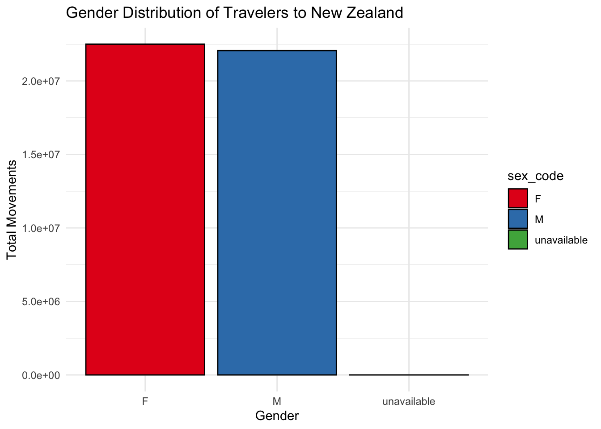
ggplot(workdf, aes(x = date, y = total_movements, group = sex_code, color = sex_code)) +
geom_line(stat = "summary", fun = sum, alpha = 0.6) +
labs(x = "Date", y = "Total Movements", title = "Travel Movements Over Time by Gender", color = "Gender") +
theme_minimal()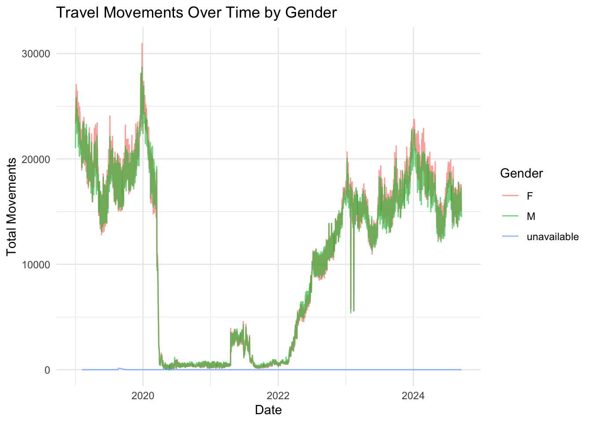
head(workdf) year month day date citizenship direction_code customs_port_code
1 2019 1 1 2019-01-01 non-NZ A AKL
2 2019 1 1 2019-01-01 non-NZ A AKL
3 2019 1 1 2019-01-01 non-NZ A AKL
4 2019 1 1 2019-01-01 non-NZ A AKL
5 2019 1 1 2019-01-01 non-NZ A AKL
6 2019 1 1 2019-01-01 non-NZ A AKL
travel_mode closest_overseas_port_code closest_overseas_port_name
1 A EZE Buenos Aires
2 A EZE Buenos Aires
3 A EZE Buenos Aires
4 A EZE Buenos Aires
5 A EZE Buenos Aires
6 A EZE Buenos Aires
closest_overseas_port_country sex_code age_at_travel_range total_movements
1 Argentina F 01 - 17 years 12
2 Argentina F 18 - 39 years 36
3 Argentina F 40 - 69 years 24
4 Argentina M 01 - 17 years 6
5 Argentina M 18 - 39 years 18
6 Argentina M 40 - 69 years 21
Date year_month
1 2019-01-01 2019-01-01
2 2019-01-01 2019-01-01
3 2019-01-01 2019-01-01
4 2019-01-01 2019-01-01
5 2019-01-01 2019-01-01
6 2019-01-01 2019-01-01coviddf <- workdf %>%
mutate(covid_period = if_else(date < as.Date("2020-03-01"), "Pre-COVID", "Post-COVID"))
covid_data <- coviddf %>%
group_by(covid_period, sex_code) %>%
summarise(Total_Movements = sum(total_movements, na.rm = TRUE), .groups = 'drop')
# Bar plot for COVID period gender distribution
ggplot(covid_data, aes(x = covid_period, y = Total_Movements, fill = sex_code)) +
geom_bar(stat = "identity", position = "dodge") + # 'dodge' to separate bars by gender
labs(x = "COVID Period", y = "Total Movements", title = "Gender Distribution of Travelers by COVID Period") +
theme_minimal() +
scale_fill_brewer(palette = "Set1") # Using a colorblind-friendly palette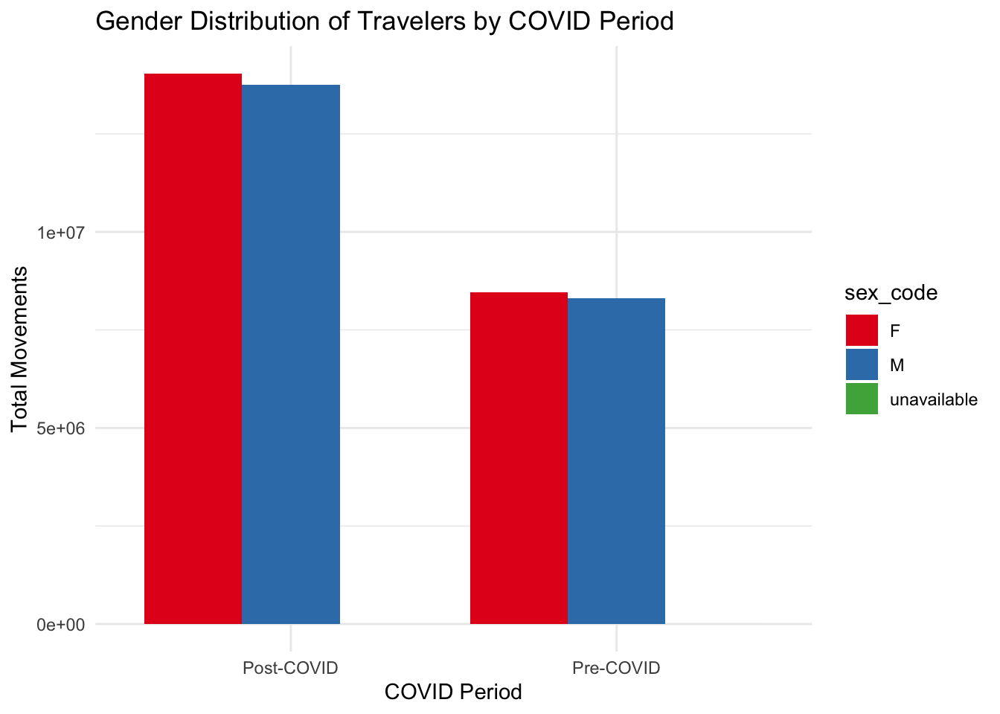
#Seasonal trends
workdf <- workdf %>%
mutate(month = as.integer(format(date, "%m")),
season = case_when(
month %in% c(12, 1, 2) ~ "Summer",
month %in% c(3, 4, 5) ~ "Fall",
month %in% c(6, 7, 8) ~ "Winter",
month %in% c(9, 10, 11) ~ "Spring"
))
seasonal_data <- workdf %>%
group_by(season, sex_code) %>%
summarise(Total_Movements = sum(total_movements, na.rm = TRUE), .groups = 'drop')
# Bar plot for seasonal gender distribution
ggplot(seasonal_data, aes(x = season, y = Total_Movements, fill = sex_code)) +
geom_bar(stat = "identity", position = "dodge") + # 'dodge' to separate bars by gender
labs(x = "Season", y = "Total Movements", title = "Seasonal Gender Distribution of Travelers") +
theme_minimal() +
scale_fill_brewer(palette = "Set1") # Using a colorblind-friendly palette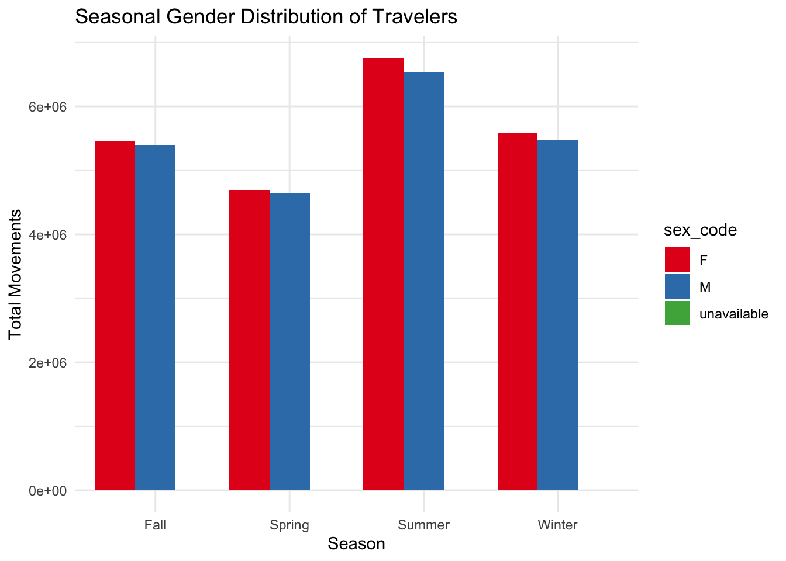
# For example, using ANOVA to test differences across groups
anova_results <- aov(Total_Movements ~ sex_code * season, data = seasonal_data)
summary(anova_results) Df Sum Sq Mean Sq
sex_code 2 8.276e+13 4.138e+13
season 3 2.649e+12 8.829e+11
sex_code:season 6 1.334e+12 2.223e+11library(readxl)
library(openxlsx)
library(tidyr)
library(dplyr)
library(ggplot2)
library(scales)
# Define a list of file paths for each month
monthly_list <- c("1.xlsx", "2.xlsx", "3.xlsx", "4.xlsx", "5.xlsx", "6.xlsx", "7.xlsx")
# Read and clean the "Table 5" data from all files
all_tables <- lapply(monthly_list, function(file) {
read_excel(file, sheet = "Table 5")
})New names:
New names:
New names:
New names:
New names:
New names:
New names:
• `` -> `...2`
• `` -> `...3`
• `` -> `...4`
• `` -> `...5`
• `` -> `...6`
• `` -> `...7`
• `` -> `...8`
• `` -> `...9`# Write the cleaned data into a new Excel file with multiple sheets
sheet_names <- c("January", "February", "March", "April", "May", "June", "July")
output_file <- "final_combined_table_5.xlsx"
wb <- createWorkbook()
# Write data to different sheets
for (i in seq_along(all_tables)) {
addWorksheet(wb, sheet_names[i])
writeData(wb, sheet = sheet_names[i], all_tables[[i]])
}
saveWorkbook(wb, output_file, overwrite = TRUE)
print(head(output_file, 20))[1] "final_combined_table_5.xlsx"# Extract rows 7-11, clean, and combine data from all sheets
all_data <- lapply(seq_along(sheet_names), function(i) {
table_5 <- read.xlsx(output_file, sheet = sheet_names[i])
filtered_rows <- table_5[7:11, -1]
filtered_rows <- cbind(Month = sheet_names[i], filtered_rows)
filtered_rows <- filtered_rows[, -c(ncol(filtered_rows)-1, ncol(filtered_rows))]
filtered_rows
})
combined_data <- do.call(rbind, all_data)
# Rename columns and save the combined data
colnames(combined_data)[2:7] <- c("Travel purpose", "2020", "2021", "2022", "2023", "2024")
# Write the combined data to a new sheet
addWorksheet(wb, "Filtered_Data")
writeData(wb, sheet = "Filtered_Data", combined_data)
saveWorkbook(wb, output_file, overwrite = TRUE)
print(head(combined_data, 10)) Month Travel purpose 2020 2021 2022 2023 2024
7 January Holiday 236496 150 106 137193 173417
8 January Visiting friends & relatives 115364 2407 1816 83055 93953
9 January Business 20428 458 324 10891 11548
10 January Education 9932 176 101 5404 7060
11 January Conferences & conventions 5388 3 2 1806 1306
71 February Holiday 193975 111 92 123968 190046
81 February Visiting friends & relatives 107512 2123 1740 86227 95168
91 February Business 30065 418 450 16440 18981
101 February Education 7766 180 119 6050 7282
111 February Conferences & conventions 6173 2 6 3106 4306#Comparison of Travel Purposes Across Years by Year Ended July, 2020-2024
# Clean and analyze data from "Year Ended July" like before
year_ended_july <- "7.xlsx"
new_file <- "year_ended_july_new.xlsx"
table_6_data <- read_excel(year_ended_july, sheet = "Table 6")New names:
• `` -> `...2`
• `` -> `...3`
• `` -> `...4`
• `` -> `...5`
• `` -> `...6`
• `` -> `...7`
• `` -> `...8`
• `` -> `...9`print(head(table_6_data, 20))# A tibble: 20 × 9
`Table 6` ...2 ...3 ...4 ...5 ...6 ...7 ...8 ...9
<chr> <chr> <dbl> <dbl> <chr> <dbl> <dbl> <chr> <chr>
1 <NA> <NA> NA NA <NA> NA NA <NA> <NA>
2 Key characteristics o… <NA> NA NA <NA> NA NA <NA> <NA>
3 Year ended July 2020–… <NA> NA NA <NA> NA NA <NA> <NA>
4 <NA> <NA> NA NA <NA> NA NA <NA> <NA>
5 Key characteristic <NA> NA NA Year… NA NA Chan… 2023…
6 <NA> <NA> 2020 2021 2022 2023 2024 Numb… Perc…
7 <NA> <NA> NA NA <NA> NA NA <NA> <NA>
8 Total visitor arrival… <NA> 2667018 213113 4139… 2617030 3221358 6043… 23.1
9 <NA> <NA> NA NA <NA> NA NA <NA> <NA>
10 Travel purpose <NA> NA NA <NA> NA NA <NA> <NA>
11 <NA> Holi… 1365241 31997 93972 1105277 1509213 4039… 36.5
12 <NA> Visi… 778010 122384 2123… 944378 1003930 59552 6.3
13 <NA> Busi… 215203 20145 37826 186910 195830 8920 4.8
14 <NA> Educ… 41443 2404 4457 40636 52207 11571 28.5
15 <NA> Conf… 56374 641 3475 46377 66188 19811 42.7
16 <NA> <NA> NA NA <NA> NA NA <NA> <NA>
17 Age group (years) <NA> NA NA <NA> NA NA <NA> <NA>
18 <NA> Unde… 226566 23871 48231 244675 288162 43487 17.8
19 <NA> 15–24 271995 20803 47066 275459 338922 63463 23.0
20 <NA> 25–34 546433 48511 81839 490638 613316 1226… 25.0 processed_data <- table_6_data[11:15, -1]
processed_data <- processed_data[, -c(ncol(processed_data)-1, ncol(processed_data))]
colnames(processed_data) <- c("Travel purpose", "2020", "2021", "2022", "2023", "2024")
processed_data <- processed_data %>%
mutate(across(c("2020", "2021", "2022", "2023", "2024"), ~ as.numeric(as.character(.))))
wb_new <- createWorkbook()
addWorksheet(wb_new, "Year Ended July")
writeData(wb_new, sheet = "Year Ended July", processed_data)
saveWorkbook(wb_new, new_file, overwrite = TRUE)
print(head(processed_data, 10))# A tibble: 5 × 6
`Travel purpose` `2020` `2021` `2022` `2023` `2024`
<chr> <dbl> <dbl> <dbl> <dbl> <dbl>
1 Holiday 1365241 31997 93972 1105277 1509213
2 Visiting friends & relatives 778010 122384 212326 944378 1003930
3 Business 215203 20145 37826 186910 195830
4 Education 41443 2404 4457 40636 52207
5 Conferences & conventions 56374 641 3475 46377 66188# Plot lines
ended_year_july <- read_excel(new_file, sheet = "Year Ended July")
long_data <- pivot_longer(ended_year_july, cols = c("2020", "2021", "2022", "2023", "2024"), names_to = "Year", values_to = "Value")
ggplot(long_data, aes(x = Year, y = Value, color = `Travel purpose`, group = `Travel purpose`)) +
geom_line(size = 0.8) +
geom_point() +
labs(title = "Comparison of Travel Purposes Across Years by Year Ended July, 2020-2024",
x = "Year",
y = "Number of Visitors",
color = "Travel Purpose") +
theme_minimal() +
theme(axis.text.x = element_text(angle = 45, hjust = 1)) +
scale_y_continuous(labels = comma) 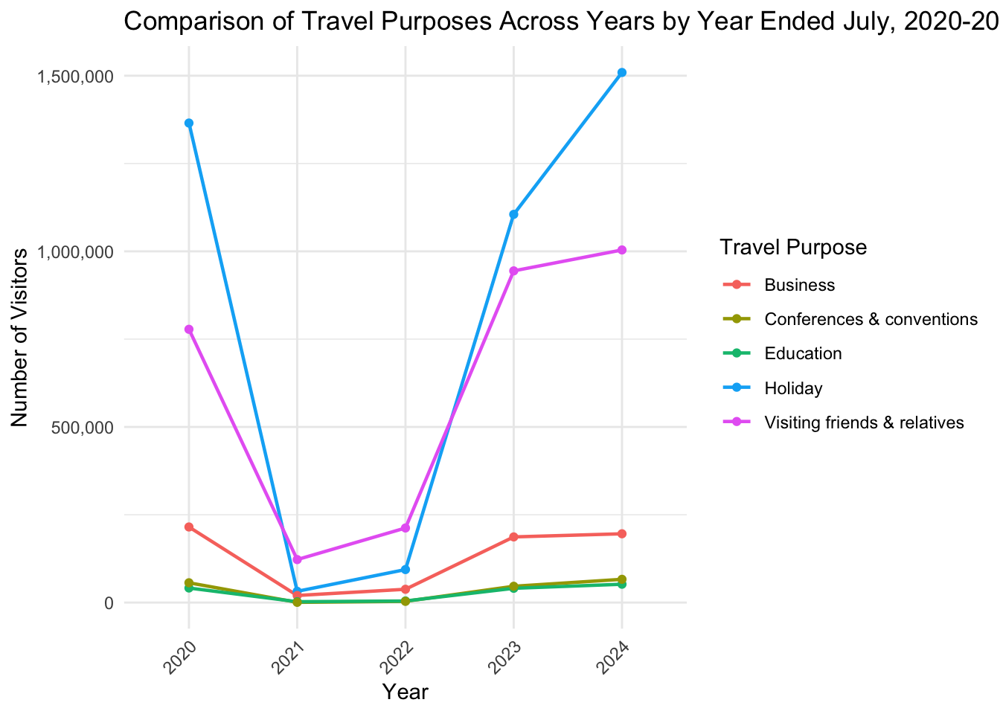
# Monthly Holiday purpose from May 2022 to June 2024
holiday_data <- combined_data %>%
filter(`Travel purpose` == "Holiday")
holiday_data <- holiday_data %>%
mutate(across(c("2020", "2021", "2022", "2023", "2024"),
~ as.numeric(as.character(.))))
holiday_data_long <- holiday_data %>%
pivot_longer(cols = c("2020", "2021", "2022", "2023", "2024"),
names_to = "Year",
values_to = "Value")
holiday_data_long <- holiday_data_long %>%
mutate(Year = as.numeric(Year))
# Adjust the filter to include all of 2022 (starting from January)
monthly_period_data <- holiday_data_long %>%
filter(
(Year == 2022 & Month %in% c("January", "February", "March", "April", "May",
"June", "July", "August", "September", "October", "November", "December")) |
(Year == 2023) |
(Year == 2024 & Month %in% c("January", "February", "March", "April", "May", "June"))
)
# Monthly Holiday purpose from May 2022 to June 2024
ggplot(monthly_period_data, aes(x = Month, y = Value, color = factor(Year), group = Year)) +
geom_line(size = 1) +
labs(title = "Monthly Holiday purpose from May 2022 to June 20244",
x = "Month",
y = "Number of Visitors",
color = "Year") +
theme_minimal() +
theme(axis.text.x = element_text(angle = 45, hjust = 1)) +
scale_y_continuous(labels = scales::comma)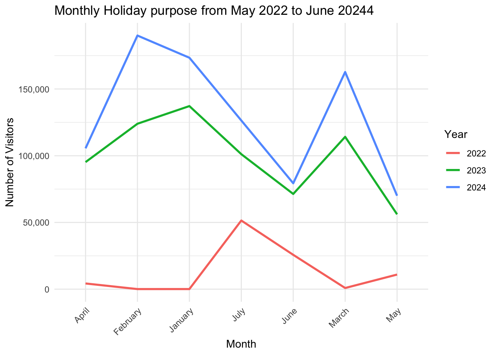
# 2019-2023, clean data like before
monthly_list_23 <- paste0(1:12, "-2023.xlsx")
all_tables <- lapply(monthly_list_23, function(file) {
read_excel(file, sheet = "Table 5")
})New names:
New names:
New names:
New names:
New names:
New names:
New names:
New names:
New names:
New names:
New names:
New names:
• `` -> `...2`
• `` -> `...3`
• `` -> `...4`
• `` -> `...5`
• `` -> `...6`
• `` -> `...7`
• `` -> `...8`
• `` -> `...9`sheet_names <- c("January", "February", "March", "April", "May", "June",
"July", "August", "September", "October", "November", "December")
output_file <- "table_5_2023.xlsx"
wb <- createWorkbook()
for (i in seq_along(all_tables)) {
addWorksheet(wb, sheet_names[i])
writeData(wb, sheet = sheet_names[i], all_tables[[i]])
}
saveWorkbook(wb, output_file, overwrite = TRUE)
all_data <- lapply(seq_along(sheet_names), function(i) {
table_5 <- read.xlsx(output_file, sheet = sheet_names[i])
filtered_rows <- table_5[7:11, -1]
filtered_rows <- cbind(Month = sheet_names[i], filtered_rows)
filtered_rows <- filtered_rows[, -c(ncol(filtered_rows)-1, ncol(filtered_rows))]
filtered_rows
})
combined_data <- do.call(rbind, all_data)
colnames(combined_data)[2:7] <- c("Travel purpose", "2019", "2020", "2021", "2022", "2023")
addWorksheet(wb, "Filtered_Data")
writeData(wb, sheet = "Filtered_Data", combined_data)
saveWorkbook(wb, output_file, overwrite = TRUE)
combined_data <- combined_data %>%
mutate(across(c("2019", "2020", "2021", "2022", "2023"), ~ as.numeric(as.character(.))))
# Monthly Travel Purpose Trends by Year 2019-2023
combined_data$Month <- factor(combined_data$Month, levels = sheet_names)
long_data <- combined_data %>%
pivot_longer(cols = c("2019", "2020", "2021", "2022", "2023"), names_to = "Year", values_to = "Value")
ggplot(long_data, aes(x = Month, y = Value, color = Year, group = Year)) +
geom_line() +
facet_wrap(~ `Travel purpose`, scales = "free_y") +
labs(title = "Monthly Travel Purpose Trends by Year 2019-2023",
x = "Month",
y = "Number of Visitors",
color = "Year") +
theme_minimal() +
theme(axis.text.x = element_text(angle = 45, hjust = 1)) +
scale_y_continuous(labels = comma)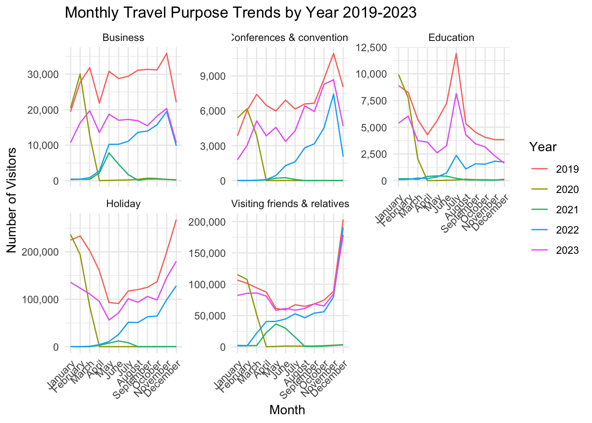
# Holiday vs Other Travel Purposes by Year and Month, 2019-2023
ggplot(long_data, aes(x = Month, y = Value, color = `Travel purpose`, group = interaction(Year, `Travel purpose`))) +
geom_line(aes(linetype = ifelse(`Travel purpose` == "Holiday", "solid", "dashed")), size = 0.8) +
scale_color_manual(values = c("Holiday" = "red", "Business" = "blue", "Conferences & conventions" = "green",
"Visiting friends & relatives" = "purple", "Education" = "orange")) +
facet_wrap(~ Year, scales = "free_y") +
labs(title = "Holiday vs Other Travel Purposes by Year and Month, 2019-2023",
x = "Month",
y = "Number of Visitors",
color = "Travel Purpose") +
theme_minimal() +
theme(axis.text.x = element_text(angle = 45, hjust = 1)) +
scale_y_continuous(labels = comma)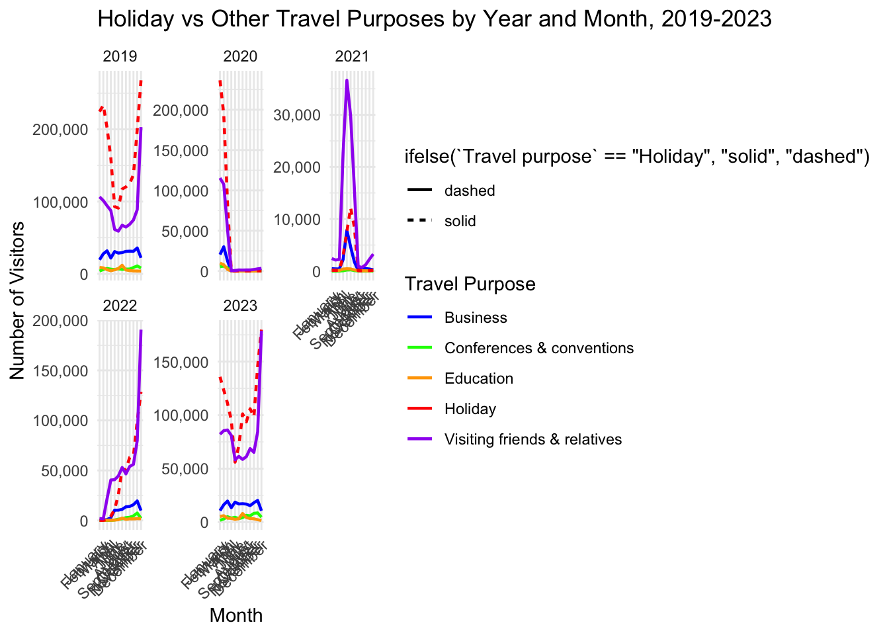
# Add a season column and divide the seasons based on the month
combined_data <- combined_data %>%
mutate(Season = case_when(
Month %in% c("December", "January", "February") ~ "Winter",
Month %in% c("March", "April", "May") ~ "Spring",
Month %in% c("June", "July", "August") ~ "Summer",
Month %in% c("September", "October", "November") ~ "Autumn"
))
# new sheet call "Seasonal"
addWorksheet(wb, "Seasonal")
writeData(wb, sheet = "Seasonal", combined_data)
saveWorkbook(wb, output_file, overwrite = TRUE)
combined_data <- combined_data %>%
mutate(across(c("2019", "2020", "2021", "2022", "2023"), ~ as.numeric(as.character(.))))
# graph
long_data <- combined_data %>%
pivot_longer(cols = c("2019", "2020", "2021", "2022", "2023"), names_to = "Year", values_to = "Value")
# Seasonal Travel Purpose Trends by Year,2019-2023
ggplot(long_data, aes(x = Season, y = Value, color = Year, group = Year)) +
geom_line() +
facet_wrap(~ `Travel purpose`, scales = "free_y") +
labs(title = "Seasonal Travel Purpose Trends by Year, 2019-2023",
x = "Season",
y = "Number of Visitors",
color = "Year") +
theme_minimal() +
theme(axis.text.x = element_text(angle = 45, hjust = 1)) +
scale_y_continuous(labels = comma)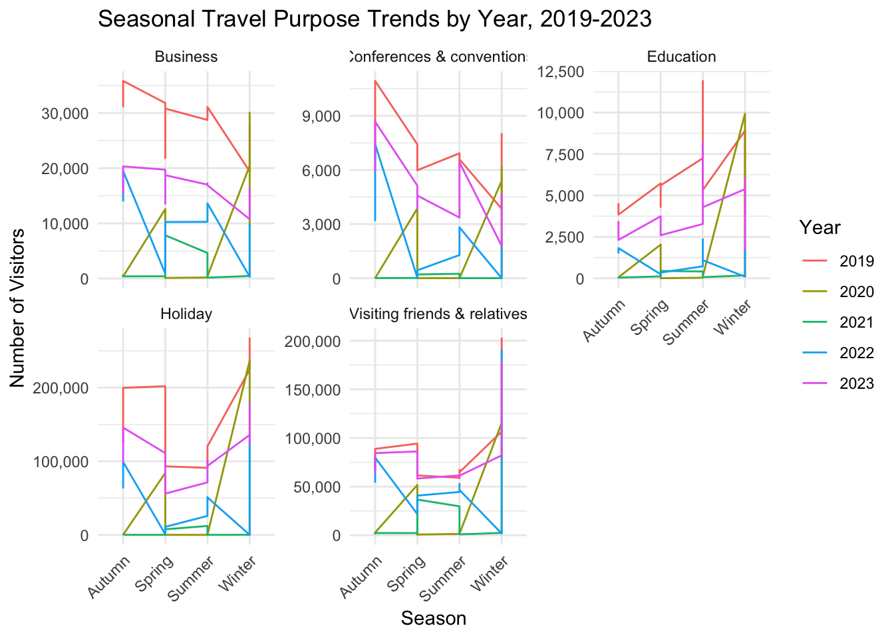
# Holiday vs Other Travel Purposes by Season and Year, 2019-2023
# Load necessary libraries
library(ggplot2)
library(scales)
library(janitor)
Attaching package: 'janitor'
The following objects are masked from 'package:stats':
chisq.test, fisher.test# Assuming you want to clean the column names
long_data <- janitor::clean_names(long_data)
# Create the line plot with modifications
ggplot(long_data, aes(x = season, y = value, color = travel_purpose, group = interaction(year, travel_purpose))) +
geom_line(aes(linetype = ifelse(travel_purpose == "Holiday", "solid", "dashed")), size = 0.8) +
scale_color_manual(values = c("Holiday" = "red", "Business" = "blue", "Conferences & conventions" = "green",
"Visiting friends & relatives" = "purple", "Education" = "orange")) +
facet_wrap(~ year, scales = "free_y") +
labs(
title = "Holiday vs Other Travel Purposes by Season and Year, 2019-2023",
x = "Season",
y = "Number of Visitors",
color = "Travel Purpose"
) +
theme_minimal() +
theme(
axis.text.x = element_text(angle = 45, hjust = 1),
legend.position = "bottom", # Move legend to the bottom
legend.title = element_text(face = "bold") # Make legend title bold for better readability
) +
scale_y_continuous(labels = comma)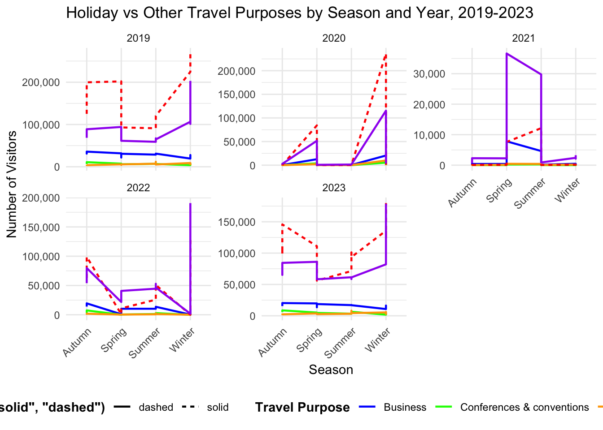
library(readxl)
library(ggplot2)
#read total visitors of each country
countrydata <- read_excel("international-visitor-arrivals-to-new-zealand-may-2024.xlsx", sheet = "Table 4", range = "A6:G42")New names:
• `` -> `...1`
• `` -> `...2`
• `` -> `...3`
• `` -> `...4`
• `` -> `...6`
• `` -> `...7`colnames(countrydata) <- as.character(countrydata[1, ])
countrydata <- countrydata[-1, ]
countrydata <- countrydata[rowSums(is.na(countrydata)) != ncol(countrydata), ]
countrydata <- countrydata[, colSums(is.na(countrydata)) != nrow(countrydata)]
countrydata <- countrydata[-c(1, 2), ]
colnames(countrydata)[1] <- "Home Countries"
#find top 10 home countries of visitors
countrydata[, 2:6] <- lapply(countrydata[, 2:6], as.numeric)
countrydata$Total <- rowSums(countrydata[, 2:6], na.rm = TRUE)
top10 <- countrydata[order(-countrydata$Total), ][1:10, ]
top10[, 2:6] <- lapply(top10[, 2:6], as.numeric)
#plotting changes in trends among top 10 countries
years <- 2020:2024
top10$`Home Countries` <- as.factor(top10$`Home Countries`)
library(tidyr)
top10_long <- pivot_longer(top10, cols = c("2020", "2021", "2022", "2023", "2024"),
names_to = "Year", values_to = "Arrivals")
top10_long$Year <- as.numeric(top10_long$Year)
ggplot(top10_long, aes(x = Year, y = Arrivals, color = `Home Countries`, group = `Home Countries`)) +
geom_line(linewidth = 1) +
geom_point(size = 2) +
labs(title = "Trends of Top 10 Home Countries of Visitors（2020~2024）",
x = "Year", y = "Number of Visitors",
color = "Home Countries") +
scale_y_continuous(labels = scales::comma) +
theme_minimal() +
theme(axis.text.x = element_text(angle = 45, hjust = 1))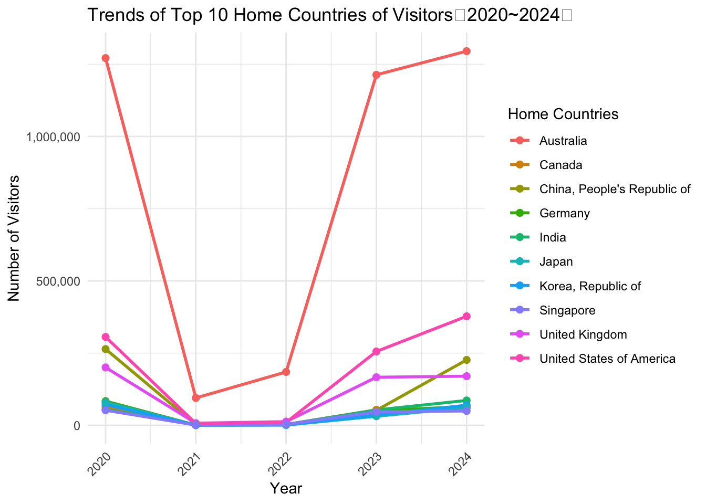
###investigate growth rate among top 10 countries
top10_growth <- top10
top10_growth$`2021_growth` <- (top10$`2021` - top10$`2020`) / top10$`2020` * 100
top10_growth$`2022_growth` <- (top10$`2022` - top10$`2021`) / top10$`2021` * 100
top10_growth$`2023_growth` <- (top10$`2023` - top10$`2022`) / top10$`2022` * 100
top10_growth$`2024_growth` <- (top10$`2024` - top10$`2023`) / top10$`2023` * 100
growth_rate_data <- top10_growth[, c("Home Countries", "2021_growth", "2022_growth", "2023_growth", "2024_growth")]
print(growth_rate_data)# A tibble: 10 × 5
`Home Countries` `2021_growth` `2022_growth` `2023_growth` `2024_growth`
<fct> <dbl> <dbl> <dbl> <dbl>
1 Australia -92.6 95.2 557. 6.75
2 United States of Ame… -97.8 54.3 2415. 47.7
3 United Kingdom -96.3 73.0 1209. 2.19
4 China, People's Repu… -99.1 -0.924 2203. 337.
5 Germany -99.1 104. 3095. 28.6
6 India -97.4 86.1 1877. 62.0
7 Canada -98.0 123. 1745. 14.4
8 Korea, Republic of -99.4 178. 2780. 94.7
9 Japan -99.2 47.4 3151. 95.2
10 Singapore -98.1 226. 1339. 6.64growth_rate_long <- pivot_longer(growth_rate_data, cols = c("2021_growth", "2022_growth", "2023_growth", "2024_growth"),
names_to = "Year", values_to = "Growth Rate")
growth_rate_long$Year <- as.numeric(sub("_growth", "", growth_rate_long$Year))
ggplot(growth_rate_long, aes(x = Year, y = `Growth Rate`, color = `Home Countries`, group = `Home Countries`)) +
geom_line(linewidth = 1) +
geom_point(size = 2) +
labs(title = "Top 10 Home Countries (2021~2024) Growth Rate of Visitors",
x = "Year", y = "Growth Rate (%)",
color = "Home Countries") +
scale_y_continuous(labels = scales::percent_format(scale = 1)) +
theme_minimal() +
theme(axis.text.x = element_text(angle = 45, hjust = 1))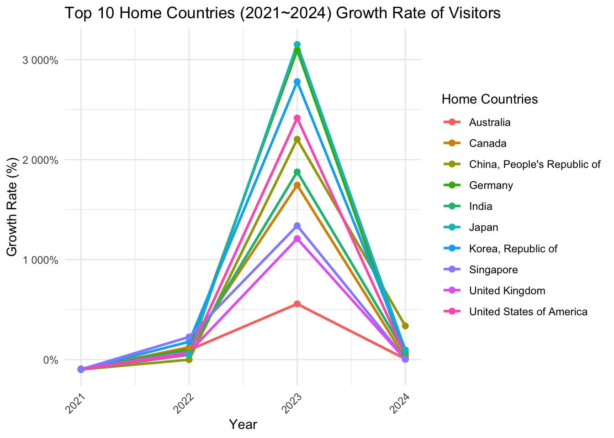
options(scipen = 999)
library(ggplot2)
ts_df <- read.csv('Timespan.csv')
colnames(ts_df)[1] <- "Year Month"
colnames(ts_df) <- ts_df[1, ]
ts_df <- ts_df[-1, ]
ts_df_total <- ts_df[, -c(2:64)]
colnames(ts_df_total)[1] <- "Year_Month"
ts_df_total$`Year_Month` <- as.character(ts_df_total$`Year_Month`)
ts_df_total$Year <- as.numeric(substr(ts_df_total$`Year_Month`, 1, 4))
ts_df_total$Month <- as.numeric(substr(ts_df_total$`Year_Month`, 6, 7))
ts_df_total$`Year Month` <- as.Date(paste(ts_df_total$Year, ts_df_total$Month, "01", sep = "-"), format = "%Y-%m-%d")
ts_df_total$Visitor <- as.numeric(ts_df_total$Visitor)
ts_df_total$TOTAL <- as.numeric(ts_df_total$TOTAL)
start_year <- 2003
start_month <- 7
ts_visitor <- ts(ts_df_total$Visitor, start = c(start_year, start_month), frequency = 12)
ts_total <- ts(ts_df_total$TOTAL, start = c(start_year, start_month), frequency = 12)
# ts plot
plot(ts_visitor, col = "blue", ylim = range(c(ts_visitor, ts_total)),
ylab = "Number of Visitors", xlab = "Year", main = "Time Series of Visitors to New Zealand",
xaxt = "n", yaxt = "n")
axis(2, at = pretty(range(c(ts_visitor, ts_total))),
labels = format(pretty(range(c(ts_visitor, ts_total))), big.mark = ","), las = 1)
years <- seq(start_year, 2024, by = 1)
axis(1, at = years, labels = years)
lines(ts_total, col = "red")
legend("topright", legend = c("Visitors Visa", "Total Visitors"),
col = c("blue", "red"), lty = 1)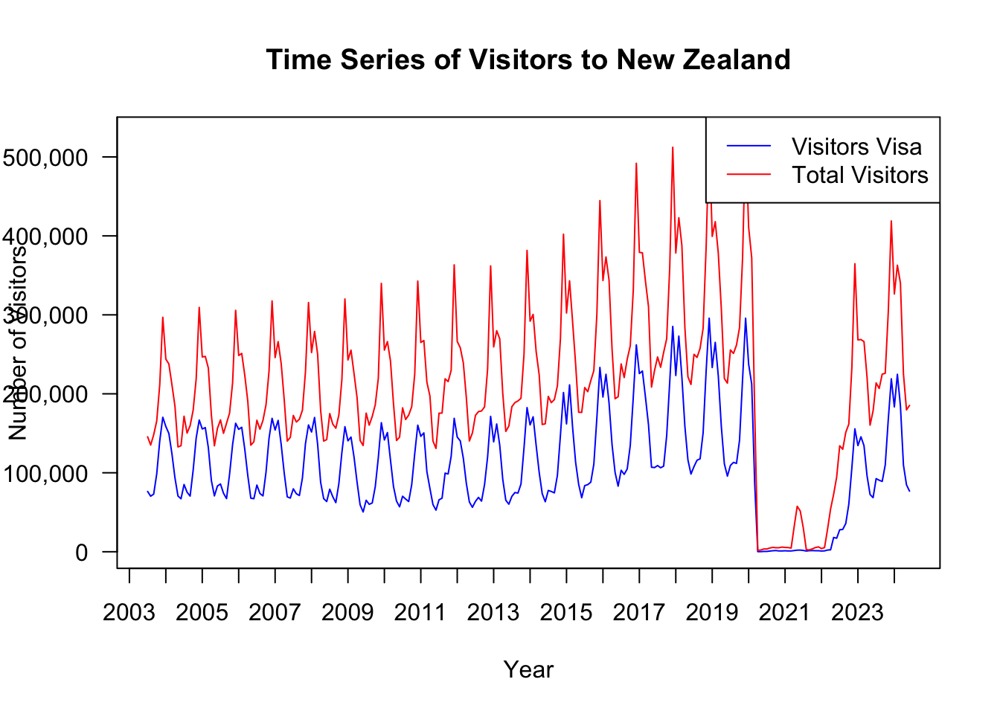
# lm on season (whole time span)
get_season <- function(month) {
if (month %in% c(12, 1, 2)) {
return("Summer")
} else if (month %in% c(3, 4, 5)) {
return("Autumn")
} else if (month %in% c(6, 7, 8)) {
return("Winter")
} else {
return("Spring")
}
}
ts_df_total$Season <- sapply(ts_df_total$Month, get_season)
ts_df_total$Season <- factor(ts_df_total$Season, levels = c("Summer", "Autumn", "Winter", "Spring"))
visitor_lm <- lm(Visitor ~ Season, data = ts_df_total)
summary(visitor_lm)
Call:
lm(formula = Visitor ~ Season, data = ts_df_total)
Residuals:
Min 1Q Median 3Q Max
-166348 -19264 -552 27348 128442
Coefficients:
Estimate Std. Error t value Pr(>|t|)
(Intercept) 167296 6571 25.458 < 0.0000000000000002 ***
SeasonAutumn -69800 9293 -7.511 0.00000000000106 ***
SeasonWinter -98466 9293 -10.595 < 0.0000000000000002 ***
SeasonSpring -66085 9293 -7.111 0.00000000001227 ***
---
Signif. codes: 0 '***' 0.001 '**' 0.01 '*' 0.05 '.' 0.1 ' ' 1
Residual standard error: 52160 on 248 degrees of freedom
Multiple R-squared: 0.327, Adjusted R-squared: 0.3189
F-statistic: 40.18 on 3 and 248 DF, p-value: < 0.00000000000000022ggplot(ts_df_total, aes(x = Season, y = Visitor)) +
geom_boxplot(fill = "lightblue") +
geom_point(position = position_jitter(width = 0.1), alpha = 0.5) +
geom_smooth(method = "lm", se = FALSE, col = "red") +
labs(title = "Visitors vs. Season in New Zealand",
x = "Season",
y = "Number of Visitors") +
theme_minimal()`geom_smooth()` using formula = 'y ~ x'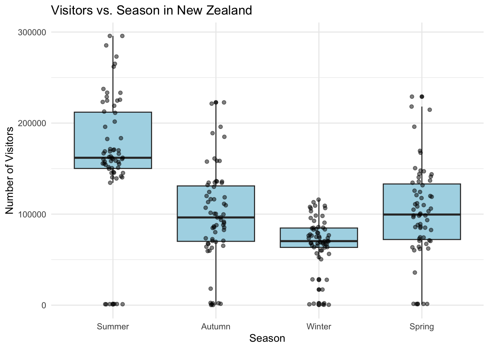
##lm prior covid
ts_df_filtered <- subset(ts_df_total, `Year Month` <= as.Date("2020-03-01"))
ts_df_filtered$Season <- sapply(ts_df_filtered$Month, get_season)
ts_df_filtered$Season <- factor(ts_df_filtered$Season, levels = c("Summer", "Autumn", "Winter", "Spring"))
visitor_lm_filtered <- lm(Visitor ~ Season, data = ts_df_filtered)
summary(visitor_lm_filtered)
Call:
lm(formula = Visitor ~ Season, data = ts_df_filtered)
Residuals:
Min 1Q Median 3Q Max
-51937 -25502 -9746 21068 115336
Coefficients:
Estimate Std. Error t value Pr(>|t|)
(Intercept) 185688 5244 35.407 <0.0000000000000002 ***
SeasonAutumn -74831 7492 -9.988 <0.0000000000000002 ***
SeasonWinter -107126 7454 -14.372 <0.0000000000000002 ***
SeasonSpring -71970 7417 -9.704 <0.0000000000000002 ***
---
Signif. codes: 0 '***' 0.001 '**' 0.01 '*' 0.05 '.' 0.1 ' ' 1
Residual standard error: 37450 on 197 degrees of freedom
Multiple R-squared: 0.5293, Adjusted R-squared: 0.5221
F-statistic: 73.84 on 3 and 197 DF, p-value: < 0.00000000000000022ggplot(ts_df_filtered, aes(x = Season, y = Visitor)) +
geom_boxplot(fill = "lightblue") +
geom_point(position = position_jitter(width = 0.1), alpha = 0.5) +
geom_smooth(method = "lm", se = FALSE, col = "red") +
labs(title = "Visitors vs. Season in New Zealand (Before March 2020)",
x = "Season",
y = "Number of Visitors") +
theme_minimal()`geom_smooth()` using formula = 'y ~ x'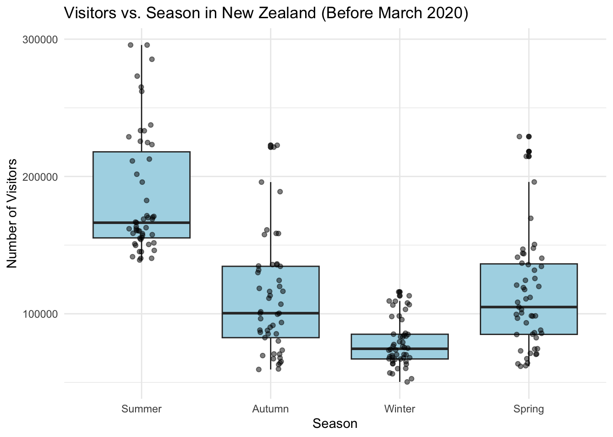
# Get column names of the data frame
colnames(workdf) [1] "year" "month"
[3] "day" "date"
[5] "citizenship" "direction_code"
[7] "customs_port_code" "travel_mode"
[9] "closest_overseas_port_code" "closest_overseas_port_name"
[11] "closest_overseas_port_country" "sex_code"
[13] "age_at_travel_range" "total_movements"
[15] "Date" "year_month"
[17] "season" library(dplyr)
library(ggplot2)
library(sf)Linking to GEOS 3.13.0, GDAL 3.9.2, PROJ 9.5.0; sf_use_s2() is TRUElibrary(maps)
Attaching package: 'maps'The following object is masked from 'package:cluster':
votes.republibrary(leaflet)# Extract distinct airport names (customs_port_code) from the raw data (workdf)
distinct_airports <- workdf %>%
select(customs_port_code) %>%
distinct()
# Print the distinct airport codes
print(distinct_airports) customs_port_code
1 AKL
2 CHC
3 ZQN
4 WLG
5 DUD
6 IVC
7 WRE
8 TRG
9 NPE
10 PCN
11 ROT
12 OPX
13 WPI
14 KKE
15 TIU
16 OHA
17 NSN
18 NPL
19 HLZ
20 GIS
21 THH
22 ZZS
23 LYT
24 WNP
25 BLU
26 PMR# Lookup table for airports with latitudes and longitudes
# check if a sample works
airport_coords <- data.frame(
customs_port_code = c("AKL", "CHC", "WLG", "ZQN"),
latitude = c(-37.0082, -43.4894, -41.3272, -45.0211),
longitude = c(174.7850, 172.5322, 174.8052, 168.7394)
)
airport_coords customs_port_code latitude longitude
1 AKL -37.0082 174.7850
2 CHC -43.4894 172.5322
3 WLG -41.3272 174.8052
4 ZQN -45.0211 168.7394# Expand table for all the airports
# Lookup table for airports with latitudes and longitudes
airport_coords <- data.frame(
customs_port_code = c("AKL", "CHC", "DUD", "GIS", "GMN", "HLZ", "IVC", "KKE",
"NPE", "NPL", "NSN", "OAM", "OHA", "PCN", "PMR", "ROT",
"THH", "TIU", "TRG", "WAG", "WLG", "WPI", "WRE", "WSZ",
"WTG", "XXA", "ZQN"),
airport_name = c("Auckland airport", "Christchurch airport", "Dunedin airport",
"Gisborne airport", "Greymouth airport", "Hamilton airport",
"Invercargill airport", "Kerikeri airport", "Napier airport",
"New Plymouth airport", "Nelson airport", "Oamaru airport",
"Ohakea airport", "Picton airport", "Palmerston North airport",
"Rotorua airport", "Taharoa airport", "Timaru airport",
"Tauranga airport", "Wanganui airport", "Wellington airport",
"Whenuapai airport", "Whangarei airport", "Westport airport",
"Waitangi airport", "Other airports", "Queenstown airport"),
latitude = c(-37.0082, -43.4894, -45.9281, -38.6635, -42.4604, -37.8667,
-46.4122, -35.2239, -39.4658, -39.0086, -41.2983, -44.9700,
-40.2069, -41.3455, -40.3206, -38.1092, -38.1833, -44.3028,
-37.6719, -39.9620, -41.3272, -36.7879, -35.7682, -41.7379,
-43.9433, NA, -45.0211),
longitude = c(174.7850, 172.5322, 170.1988, 177.9770, 171.2105, 175.3321,
168.3138, 173.9114, 176.8706, 174.1790, 173.2211, 170.0578,
175.3880, 173.9503, 175.6173, 176.3179, 174.7930, 171.2411,
176.1956, 175.0256, 174.8052, 174.6300, 174.3652, 171.5806,
-176.5670, NA, 168.7394)
)
# Print the expanded airport coordinates table
print(airport_coords) customs_port_code airport_name latitude longitude
1 AKL Auckland airport -37.0082 174.7850
2 CHC Christchurch airport -43.4894 172.5322
3 DUD Dunedin airport -45.9281 170.1988
4 GIS Gisborne airport -38.6635 177.9770
5 GMN Greymouth airport -42.4604 171.2105
6 HLZ Hamilton airport -37.8667 175.3321
7 IVC Invercargill airport -46.4122 168.3138
8 KKE Kerikeri airport -35.2239 173.9114
9 NPE Napier airport -39.4658 176.8706
10 NPL New Plymouth airport -39.0086 174.1790
11 NSN Nelson airport -41.2983 173.2211
12 OAM Oamaru airport -44.9700 170.0578
13 OHA Ohakea airport -40.2069 175.3880
14 PCN Picton airport -41.3455 173.9503
15 PMR Palmerston North airport -40.3206 175.6173
16 ROT Rotorua airport -38.1092 176.3179
17 THH Taharoa airport -38.1833 174.7930
18 TIU Timaru airport -44.3028 171.2411
19 TRG Tauranga airport -37.6719 176.1956
20 WAG Wanganui airport -39.9620 175.0256
21 WLG Wellington airport -41.3272 174.8052
22 WPI Whenuapai airport -36.7879 174.6300
23 WRE Whangarei airport -35.7682 174.3652
24 WSZ Westport airport -41.7379 171.5806
25 WTG Waitangi airport -43.9433 -176.5670
26 XXA Other airports NA NA
27 ZQN Queenstown airport -45.0211 168.7394library(dplyr)
workdf_split <- workdf %>%
group_by(year, customs_port_code) %>%
summarise(total_movements = sum(total_movements, na.rm = TRUE), .groups = "drop")
# Merge with coordinates
work_with_coords <- merge(workdf_split, airport_coords, by = "customs_port_code")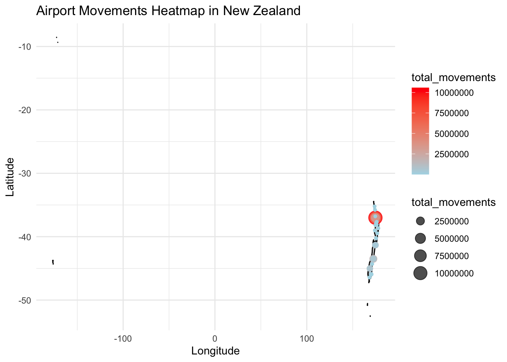
leaflet(data = work_with_coords) %>%
addTiles() %>%
addCircleMarkers(
~longitude, ~latitude,
radius = ~sqrt(total_movements) / 200, # Reduce the scaling factor to make the markers smaller
color = ~ifelse(total_movements > 10000, "red", "blue"),
fillOpacity = 0.5, # Reduce the opacity to see overlapping markers better
popup = ~paste("Airport:", customs_port_code, "<br>Total Movements:", total_movements)
) %>%
setView(lng = 174.7850, lat = -41.2865, zoom = 5) # Center and zoom to New Zealand# Extract unique years from the dataset
unique_years <- sort(unique(work_with_coords$year))
print(unique_years)[1] 2019 2020 2021 2022 2023 2024# Load packages
library(leaflet)
library(leaflet.extras)
# Create maps for each year with a heatmap layer
for (year in unique_years) {
# Filter the data for the current year
yearly_data <- work_with_coords %>% filter(year == year)
# Create a leaflet map for the current year
leaflet(data = yearly_data) %>%
addTiles() %>%
addHeatmap(
lng = ~longitude, lat = ~latitude,
intensity = ~total_movements, # Use total movements as the heat intensity
blur = 10,
max = 0.05,
radius = 12
) %>%
setView(lng = 174.7850, lat = -41.2865, zoom = 5) %>%
print()
}library(htmlwidgets)
# Save each map to an HTML file
for (year in unique_years) {
# Filter the data for the current year
yearly_data <- work_with_coords %>% filter(year == year)
# Create a leaflet map for the current year
map <- leaflet(data = yearly_data) %>%
addTiles() %>%
addCircleMarkers(
~longitude, ~latitude,
radius = ~sqrt(total_movements) / 200,
color = ~ifelse(total_movements > 10000, "red", "blue"),
fillOpacity = 0.5,
popup = ~paste("Airport:", customs_port_code, "<br>Total Movements:", total_movements)
) %>%
setView(lng = 174.7850, lat = -41.2865, zoom = 5)
# Save the map as an HTML file
saveWidget(map, paste0("yearly_map_", year, ".html"))
}# Load the necessary libraries
library(dplyr)
# Aggregate data to get total movements per year for each airport
yearly_totals <- work_with_coords %>%
group_by(year, customs_port_code) %>%
summarise(total_movements = sum(total_movements, na.rm = TRUE), .groups = "drop")
# View the summary data
print(head(yearly_totals))# A tibble: 6 × 3
year customs_port_code total_movements
<int> <chr> <int>
1 2019 AKL 10580217
2 2019 CHC 1789617
3 2019 DUD 120345
4 2019 GIS 45
5 2019 HLZ 69
6 2019 IVC 1197# Load the ggplot2 library
library(ggplot2)
# Create the line chart
ggplot(yearly_totals, aes(x = year, y = total_movements, color = customs_port_code, group = customs_port_code)) +
geom_line(size = 1) +
geom_point(size = 2) +
labs(
title = "Total Arrivals per Year per Airport",
x = "Year",
y = "Total Movements",
color = "Airport Code"
) +
theme_minimal() +
theme(axis.text.x = element_text(angle = 45, hjust = 1)) 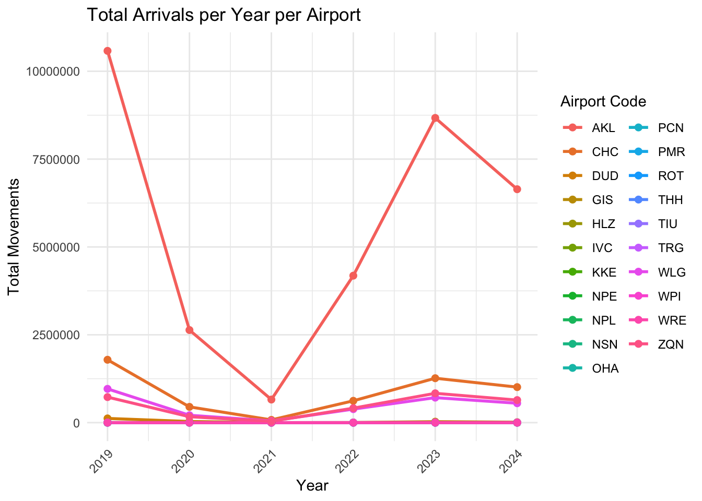
library(dplyr)
# Aggregate data to get total movements per year for each airport
yearly_totals <- work_with_coords %>%
group_by(year, customs_port_code) %>%
summarise(total_movements = sum(total_movements, na.rm = TRUE), .groups = "drop")
print(head(yearly_totals))# A tibble: 6 × 3
year customs_port_code total_movements
<int> <chr> <int>
1 2019 AKL 10580217
2 2019 CHC 1789617
3 2019 DUD 120345
4 2019 GIS 45
5 2019 HLZ 69
6 2019 IVC 1197library(ggplot2)
options(repr.plot.width = 15, repr.plot.height = 20) # Adjusting plot dimensions
# Create the line chart with facet wrapping in 3 columns per row
ggplot(yearly_totals, aes(x = year, y = total_movements, group = customs_port_code)) +
geom_line(size = 1, color = "lightblue") +
geom_point(size = 2, color = "darkblue") +
facet_wrap(~ customs_port_code, scales = "free_y") +
labs(
title = "Total Arrivals per Year per Airport",
x = "Year",
y = "Total Movements"
) +
theme_minimal() +
theme(
axis.text.x = element_text(angle = 45, hjust = 1),
strip.text = element_text(size = 10, face = "bold"),
panel.spacing = unit(1, "lines")
)`geom_line()`: Each group consists of only one observation.
ℹ Do you need to adjust the group aesthetic?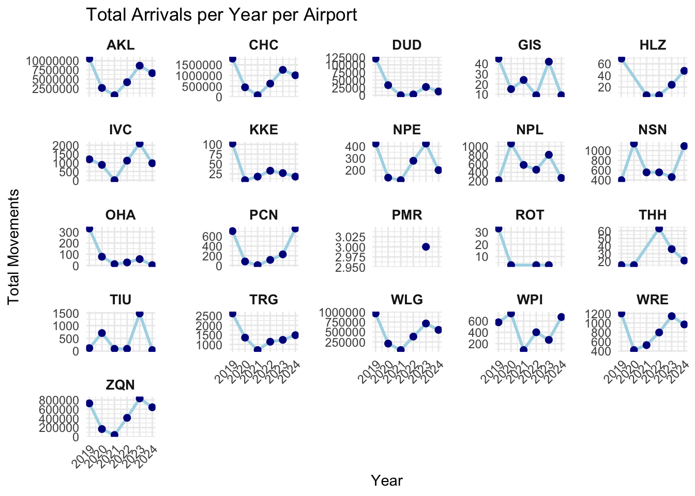
# Load necessary library
library(dplyr)
# Create a function to assign seasons based on the month
get_season <- function(month_num) {
if (month_num %in% c(12, 1, 2)) {
return("Summer")
} else if (month_num %in% c(3, 4, 5)) {
return("Autumn")
} else if (month_num %in% c(6, 7, 8)) {
return("Winter")
} else {
return("Spring")
}
}
# Extract the month from year_month and assign seasons
workdf_monthly <- workdf_monthly %>%
mutate(month = month(year_month),
season = sapply(month, get_season))# Load necessary library
library(dplyr)
# Group data by season and calculate average movements
seasonal_summary <- workdf_monthly %>%
group_by(season) %>%
summarise(
avg_movements = mean(total_movements, na.rm = TRUE),
total_movements = sum(total_movements, na.rm = TRUE)
) %>%
arrange(desc(avg_movements)) # Sort to see which season has the highest average movements
print(seasonal_summary)# A tibble: 4 × 3
season avg_movements total_movements
<chr> <dbl> <int>
1 Summer 195500. 13294026
2 Winter 153595. 11058810
3 Autumn 150877. 10863156
4 Spring 143763. 9344610# Bar plot to visualize average total movements by season
ggplot(seasonal_summary, aes(x = reorder(season, -avg_movements), y = avg_movements, fill = season)) +
geom_bar(stat = "identity", color = "black") +
labs(
title = "Average Total Movements by Season",
x = "Season",
y = "Average Total Movements"
) +
theme_minimal() +
theme(legend.position = "none")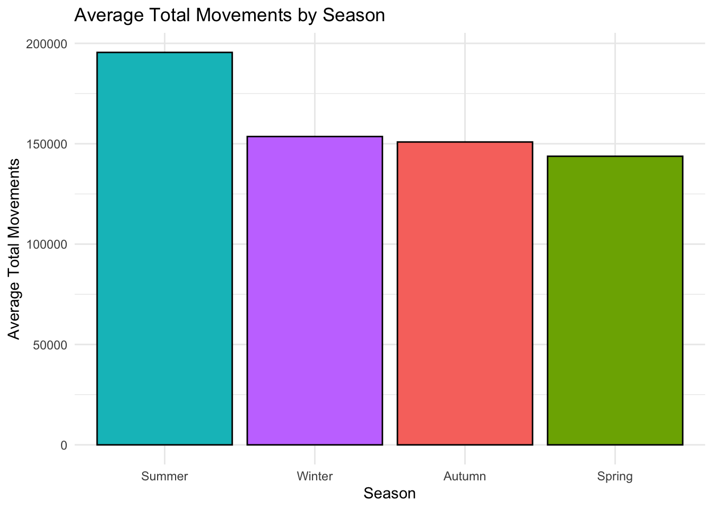
# Group data by year and season and calculate total movements
workdf_season_year <- workdf_monthly %>%
group_by(year = year(year_month), season) %>%
summarise(
total_movements = sum(total_movements, na.rm = TRUE)
) %>%
ungroup()`summarise()` has grouped output by 'year'. You can override using the
`.groups` argument.print(workdf_season_year)# A tibble: 24 × 3
year season total_movements
<dbl> <chr> <int>
1 2019 Autumn 3400878
2 2019 Spring 3444672
3 2019 Summer 4084038
4 2019 Winter 3271182
5 2020 Autumn 753861
6 2020 Spring 78981
7 2020 Summer 2597337
8 2020 Winter 77670
9 2021 Autumn 302208
10 2021 Spring 65586
# ℹ 14 more rows# Bar plot faceted by season to visualize differences across years
ggplot(workdf_season_year, aes(x = factor(year), y = total_movements, fill = season)) +
geom_bar(stat = "identity", position = "dodge", color = "black") +
facet_wrap(~ season) +
labs(
title = "Total Movements by Year Split by Season",
x = "Year",
y = "Total Movements",
fill = "Season"
) +
theme_minimal() +
theme(
axis.text.x = element_text(angle = 45, hjust = 1),
strip.text = element_text(size = 10, face = "bold")
)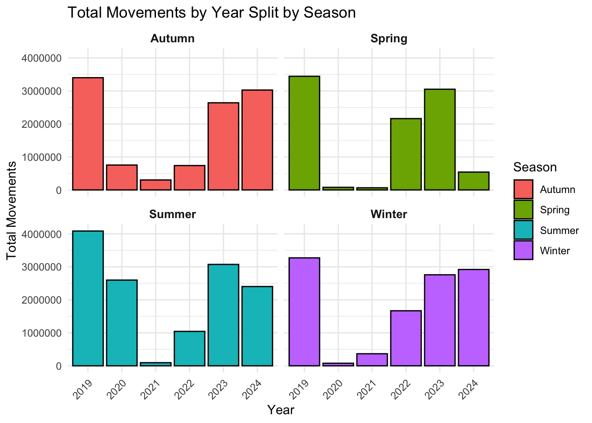